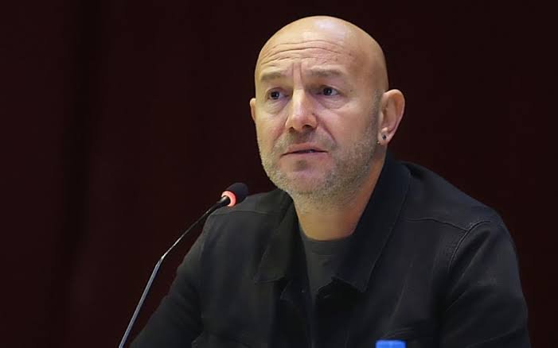
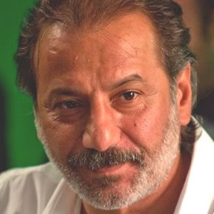
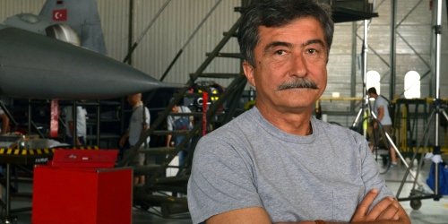

Çağan Irmak4 Nisan 1970 tarihinde İzmir'de doğdu. Çocukluğu Seferihisar'da geçti. Ege Üniversitesi İletişim Fakültesi Radyo, TV ve Sinema Bölümünden mezun oldu. "Asmalı Konak" adlı televizyon dizisiyle ismini bütün Türkiye'ye duyurdu. Sonra hem 1980'li yılların karışık, gergin ve politik hâlini hem de 2000'li yıllardaki bir sonraki kuşağın yaşadıklarını anlatan "Çemberimde Gül Oya" dizisini yazdı ve yönetti. "Bana Şans Dile", "Mustafa Hakkında Herşey", "Babam ve Oğlum", "Ulak", "Issız Adam", "Karanlıktakiler", "Prensesin Uykusu","Dedemin İnsanları", "Tamam mıyız?", "Unutursam Fısılda" ve "Nadide Hayat" adlarında 11 uzun metrajlı sinema filmi ve "Çilekli Pasta" adlı bir TV filminin yanı sıra ödüllü kısa filmleri de bulunmaktadır. |
 |
Faruk Aksoyİstanbul Üniversitesi'ni bitirdi. Aynı Üniversitede Avrupa Topluluğu Hukuku alanında master yaptı. Sinemaya Onat Kutlar'ın yanında çalışarak başladı. Serbest çalıştığı dönemde Tony Gatlif, Bernard Faroux, Kostas Kutsomitris, Lucien Pintielie gibi önemli yönetmenlerle çalıştı. 1995 yılında kendi yapım şirketini kurdu ve ilk uzun metraj filminin yapımcılığını Canan Gerede'nin yönettiği Aşk Ölümden Soğuktur isimli film ile gerçekleştirdi. 1996 yılında başta Claude Miller ve Wim Wenders olmak üzere birçok Avrupalı ve Koreli yönetmenlerin gerçekleştirdiği reklam filmlerinin yapımcılığını üstlendi. 1997 yılında Claude Lelouch'un çektiği Hasard et Coinciedences adlı filmin Türkiye çekimlerinin yapımcılığını üstlendi ve Umur Turagay'ın yönettiği Karışık Pizza isimli filmin yapımcısı oldu. Zeki Ökten'in yönettiği Güle Güle isimli filminin yapımcılığını üstlendi. Yeşil Işık isimli film ilk yönetmenlik denemesidir. Ayrıca 17 milyon dolar bütçe ile çekilen Fetih 1453 filminin yönetmenliğini ve yapımcılığını üstlenmiştir. |
 |
Ömer Vargı1970'te TED Ankara Kolejinden, 1976'da Orta Doğu Teknik Üniversitesi Fizik Bölümünden mezun oldu. 1974'te Yılmaz Güney'in Endişe filminde asistanlığa başlayıp, onu takip eden 2 yıl içerisinde Şerif Gören ile çalıştı. Çeşitli reklam ve yapım şirketlerini kurdu veya ortağı oldu. 1500'ün üstünde reklam filmi yönetti. |
 |